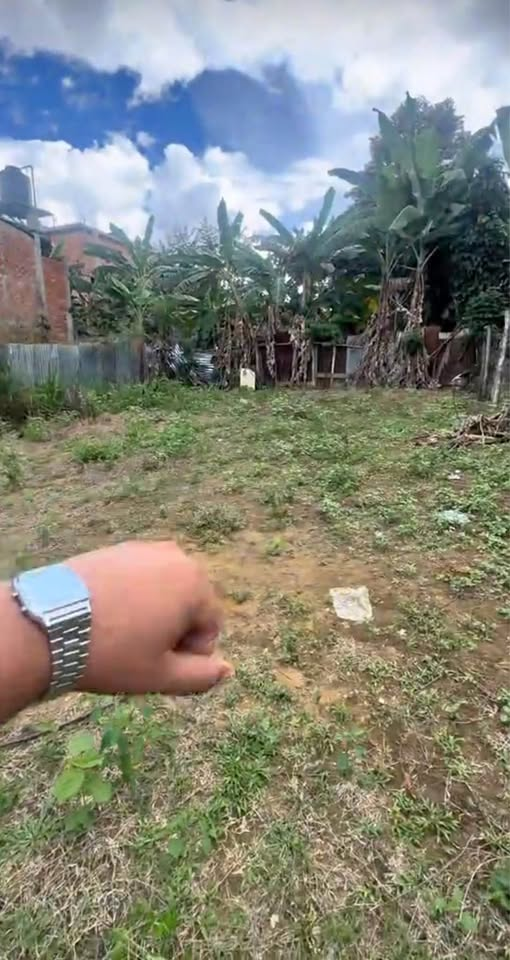

PEN100,000 198 m²

🏡TERRENO 198 m2 TARAPOTO-COPERHOLTA 🚨CELULAR: S/100 mil soles 🚨INVERSIÓN: 9️⃣4️⃣8️⃣8️⃣7️⃣5️⃣9️⃣2️⃣3️⃣ 📌Ubicado a 04 cuadras de Av. Circunvalación, 03 min Instituto Amazónico 📐ÁREA: 198 m2 Incluye: ✅Agua Potable ✅Energía Eléctrica ✅Desagüe ✅Título de Propiedad ✅Bonitas Vistas a la ciudad. ✅Zona Tranquila 🤑💰Excelente ubicación construir tu hogar o inversión por alta revalorización ✅